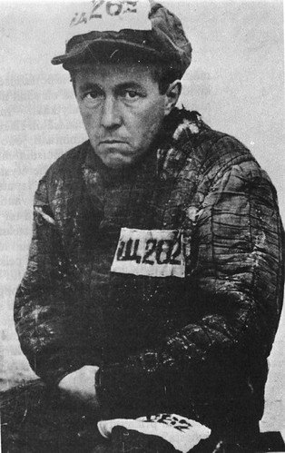

Solzhenitsyn's Archipelago

His Life
Born in 1918, Aleksandr Solzhenitsyn grew up in Rostov-on-Don Russia. While studying mathematics at Rostov University, he also took correspondence courses in Moscow Institute's History-Philosophy-Literature department. Throughout World War II, he served in the Soviet Army as the commander of a sound-ranging battery. While fighting in major actions on the Eastern Front, he was decorated three times for his service. In 1944 through 1945 he corresponded privately with a friend, of which included critical remarks on Stalin, and was arrested by SMERSH.
From 1945 to 1953 he was imprisoned various corrective labor camps in the Soviet Union; being sent to a special camp in 1950 for political prisoners. During this time and his subsequent exile, he significantly reevaluated his views. In exile, he taught mathematics and physics in a village school while secretly writing. During the Khrushchev Thaw, Solzhenitsyn was allowed to return to the Soviet Union and published his first major work, One Day in the Life of Ivan Denisovich, in 1962 with state approval. After Krushchev's fall from power, Solzhenitsyn was censored and his novels banned in the Soviet Union.
His Impact
While under watch by the Soviet authorities, Solzhenitsyn continued to work in secret. Some of it reached the West, specifically the first version of August 1914 and The Gulag Archipelago. They received wide attention and helped to expose the harsh realities of the Soviet system. For Solzhenitsyn, he was flown against his will to West Germany and stripped of his Soviet citizenship. Eventually settling in Vermont in the United States, he continued to write and speak out against both the Soviet system and ideologies that supported similar systems. Not until Gorbachev's reforms was his citizenship restored in 1990. Four years later he returned to Russia and lived there until his death in 2008.
"Thanks to ideology the twentieth century was fated to experience evildoing calculated on a scale in the millions." ― Aleksandr Solzhenitsyn, The Gulag Archipelago
His Legacy
Solzhenitsyn's works continue to be of contemporary importance in understanding the roots of totalitarianism and its impact on the human spirit. While The Gulag Archipelago remains well studied in academic circles, this and his other lessons have dimmed in the public consciousness. Though he believed humans could "[...] learn from the experience of other people without having to go through it personally," he also knew that such historical catastrophes could be repeated. Perhaps most importantly, his work serves as a warning about the dangers of individual freedom without the moral and ethical responsibility that should accompany it.